|
图像+视频处理 |
|
| 1 |
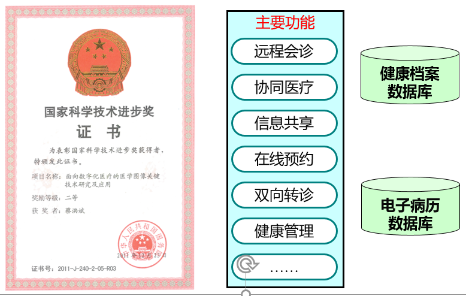 |
“面向数字化医疗的医学图像关键技术研究及应用”获国家科学技术进步二等奖 |
| 2 |
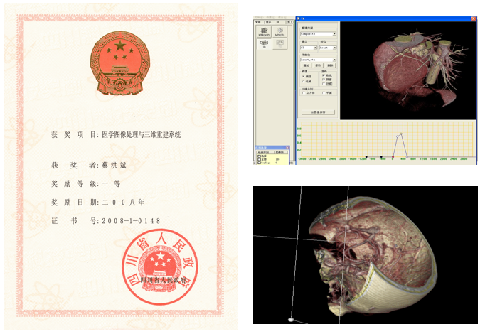 |
“医学图像处理与三维重建关键技术”获四川省科学技术进步一等奖 |
| 3 |
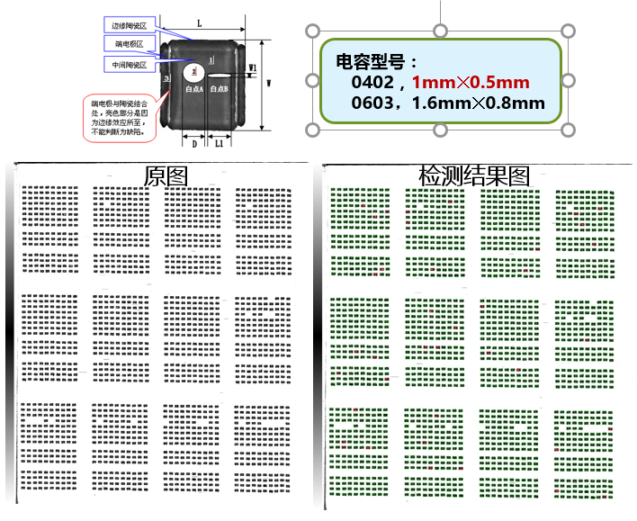 |
电容内部缺陷智能检测系统
- 超声波扫描电容内部缺陷
- 人工智能分析，定位缺陷电容及缺陷尺寸
- 缺陷电容准确率>99.9%
|
| 4 |
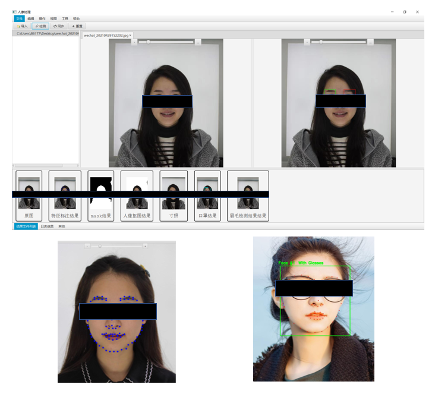 |
人像处理服务平台
- 眉毛遮挡检测
- 特征点检测
- 戴眼镜检测
- 戴口罩检测
- 抠图
- 裁剪标准寸照
|
| 5 |
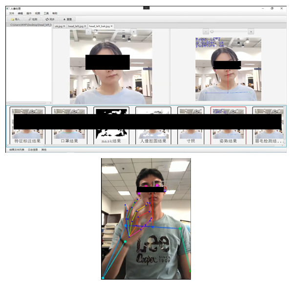 |
青少年坐姿实时检测及AIS风险预测系统
- 坐姿实时检测，不良坐姿实时警示
- 正确坐姿与错误坐姿统计及智能分析，预测AIS风险
- AIS风险大，则进行筛查提醒
|
| 6 |
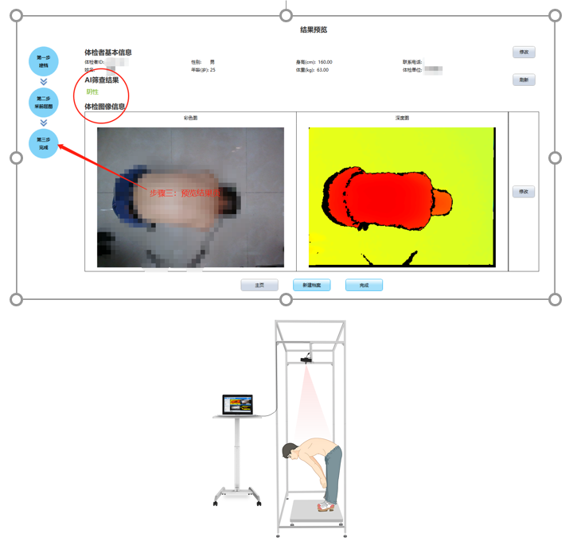 |
青少年脊柱侧弯AIS快速筛查系统
- 使用3D深度传感器，采集前屈背部三维点云，获取深度偏差图
- 采用深度学习算法，快速判断脊柱侧弯阳性
|
| 7 |
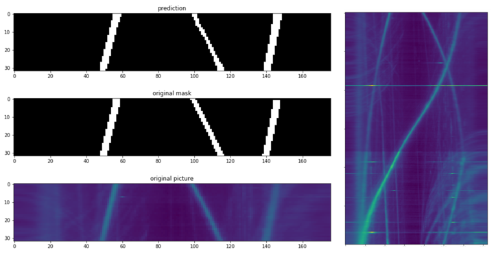 |
基于深度学习的水下目标检测与识别软件
- 利用深度学习技术对方位历程图（BTR）进行目标检测、识别及跟踪
|
|
图形计算 |
|
| 1 |
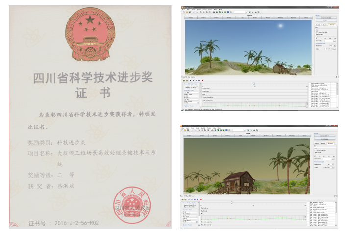 |
“大规模三维场景高效处理关键技术及系统”获四川省科学技术进步二等奖 |
| 2 |
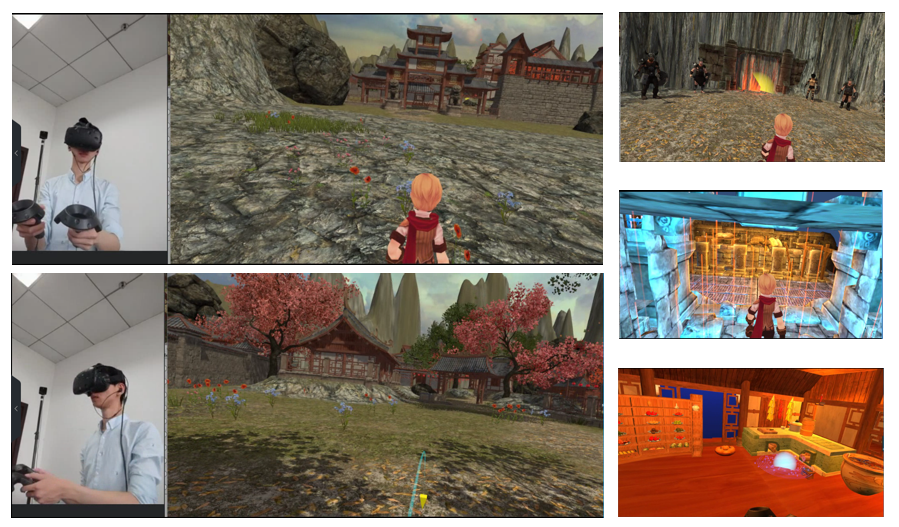 |
VR游戏
|
| 3 |
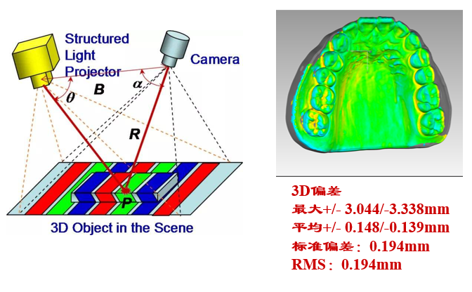 |
口内三维扫描系统
- 基于结构光的三维扫描硬件系统
- 三维点云生成算法
- 三维点云处理及面片法算法
|
| 4 |
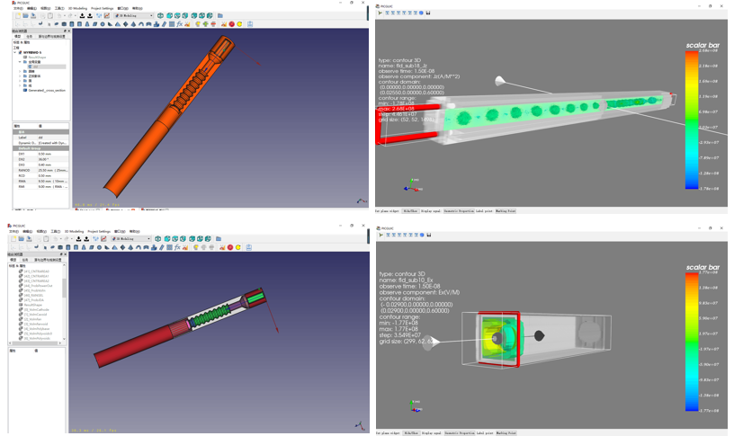 |
微波器件建模及计算数据可视化
|
| 5 |
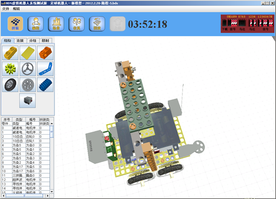 |
面向智能玩具领域的核心技术研究及其产业化示范项目--智能教育机器人虚拟设计与仿真平台
- 积木块三维建模
- 可视化积木组装
- 图形化编程控制
- 物理仿真
|
| 6 |
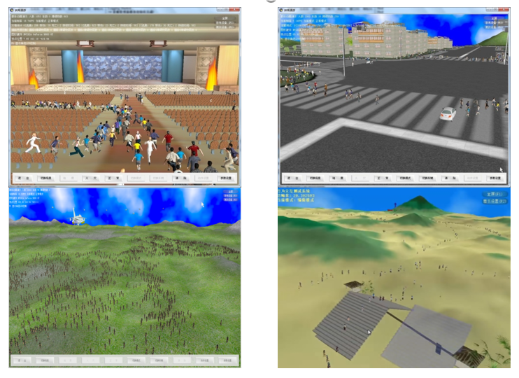 |
大规模群体动画模拟与绘制技术（863探索项目）
- 大规模群体动画
- 应急逃生仿真
- 大型场景建模
- 物理仿真
|
| 7 |
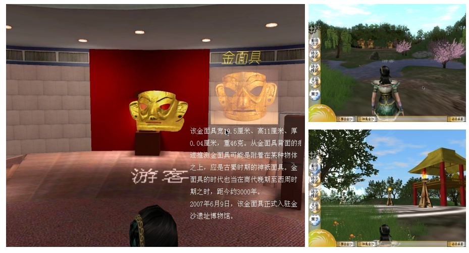 |
体验式虚拟博物馆数字展示
- 古场景建模
- 角色动画及物理仿真
- 古文物三维建模
- 基于物理的动画
|
|
网络应用 |
|
| 1 |
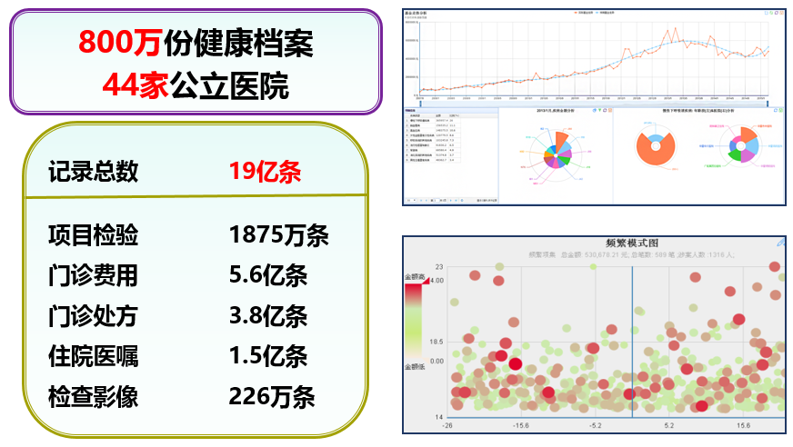 |
基于大数据的居民健康智能服务平台关键技术研究及应用
- 大数据分析与挖掘
- 数据清洗与结构化
- 数据可视化
- 智能决策
|
| 2 |
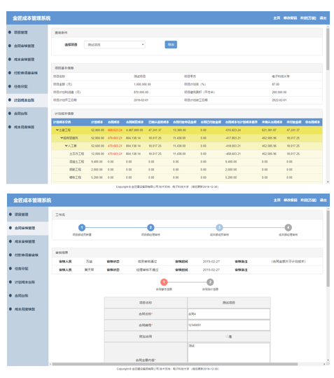 |
建筑公司成本管理系统
- Spring + SpringMVC + Hiberate
- 基于RBAC的权限管理：Shiro
- Tomcat + MySQL
|
| 3 |
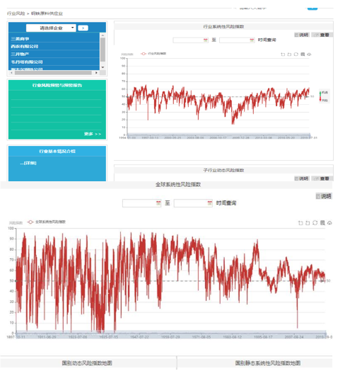 |
金融风险控制管理平台
|